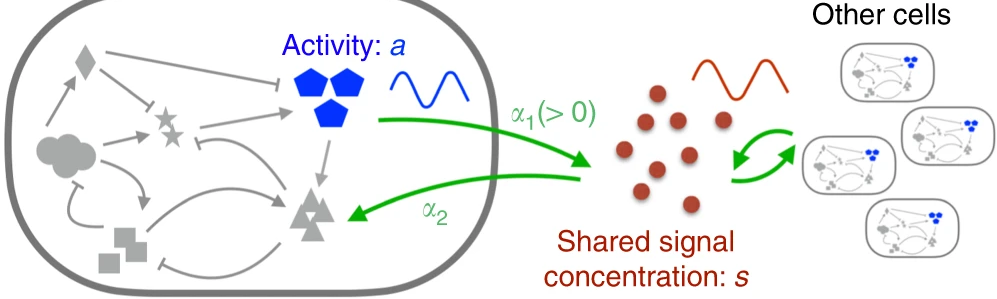

Welcome!
Outline of this lecture (L1)
- Two views on Systems Biology
- Expectations on the course (Mentimeter exercise)
- Break
- Overview of course PM
CB2030 – Systems Biology

Network Biology and Metabolic Engineering


Teaching assistants: Krzysztof Jurdziński, Yuqi Zheng, Ulysse Castet, Konstantinos Antonopoulos, Anna Hensel, Amin Saeidi Kelishami, Cassandra Wivegg, Andrei Tertienko
A definition of a System
A human cell – a system
Other examples of systems


Turing Machine

Turing, “On computable numbers, with an application to the Entscheidungsproblem”, Proc. London Math. Soc. s2-42:230–265 (1936)
Information processing in cells and computers
| CPU | GPU | Cell | |
|---|---|---|---|
| Processes information | In serial | In parallel | In parallel |
| Aborts processes that get stuck | No | No | Yes |
| Number of simultaneous processes | 1–8 | 1000s | millions |
Bennett, “The thermodynamics of computation – a review”, Int. J. Theor. Phys. 21:905–940 (1982)
More is different
“At each level of complexity entirely new properties appear.”
P. W. Anderson, “More is different”, Science 177:393 (1972)
Game of Life
Born with 3 neighbours
Survives with 2 or 3
Conway's Game of Life, in Gardner, “Mathematical Games”, Scientific American 223 (1970)
Flocking
Reynolds, “Flocks, herds and schools”, SIGGRAPH 1987
Emergism: Spontaneous oscillations in a communicating cell population

[Wang & Tang, Nat Commun 2019]
The repressilator
Elowitz & Leibler, Nature 403:335 (2000)
Aim of the course
After passing the course, you should be able to:
- Describe widely used statistical and computational techniques employed to investigate data from high-throughput techniques for measuring biopolymers.
- Explain the theory of state-of-the-art tools/algorithms for combining data from high-throughput molecular biology experiments.
- Choose appropriate machine learning strategies for processing molecular biology data.
- Apply network biology tools for interpreting data.
- Interpret the results of these analyses in a biologically or medically relevant context.
- Reflect over the choice of methods and tools and how it influences the outcome of the analyses.
The modules of the course
The course is organized in 4 modules:
- Machine Learning and Statistics – LK
- Network Biology and Metabolic Engineering – LK
- Multicellular transcriptional systems – SK
- Systems genetics of human disease – TL
There is also an introductory lecture. In total 18 lectures and 4 computer exercises.
Prerequisites
The following courses, or equivalent, are recommended:
- Bioinformatics corresponding to BB2441 Bioinformatics
- Programming corresponding to BB1000 Programming in Python
- Probability theory corresponding to SF1911 Statistics for Bioengineering, 6.0 credits
- Knowledge of modern omics experiments corresponding to BB2255 Applied Gene Technology
We provide some reading recommendations on Canvas, if you feel you lag behind in programming or statistics.
Course Literature
- Lukas Käll, “Data Science for Biotechnology Students”, available under open license from: https://www.kaell.se/dsbook
- Jake VanderPlas, “Python Data Science Handbook, Essential Tools for Working with Data”, O'Reilly Media, available under MIT license from: https://jakevdp.github.io/PythonDataScienceHandbook/
Additional articles or other resources may be specified during the course. Detailed reading assignments will be provided during the course.
Question-driven seminars
Lectures L2–L18 are given as question-driven seminars.
- PrepareGo through the preparatory material before the lecture.
- AttendBe present at the lecture.
- AnswerAnswer more than 75 % of the questions in the quiz app during the lecture.
- Each attended lecture gives 0.5 activity points, up to 8 points (16 lectures). No points for offline answers.
- Quiz app: quizbinf.serve.scilifelab.se
- L19 is a questions and answers session, where you can pose questions to prepare for the exam.
Computer Exercises
Four computer exercises (LAB1, 2.5 hp, Pass/Fail):
- C1: Hypothesis Testing
- C2: Machine Learning
- C3, C4: Multicellular transcriptional systems
C0 (Software and Notebooks) is a voluntary session for getting your software running.
The exercises are preferably carried out on the computers in the lab hall, but you are allowed to use your own computer.
How the computer exercises work
- Team upTwo students per team. Find your partner and register the team in Canvas.
- Answer the questionsWork through the lab instruction together with your partner.
- Go through it with a TAYour team's answers and code. Satisfactory answers give a Pass.
- Additional questions for those who want to delve deeper (no points)
- Participation is on-site. If you cannot be there, book a reporting appointment with the TAs.
- Instructions and datasets: Canvas and statisticalbiotechnology.github.io/cb2030/lab/
Examination
- To get a final grade you must pass the written exam (A–E) and get a Pass on the computer exercises.
- Your final grade is the grade on your written exam.
- With an Fx you may request a complementary assignment; if satisfactory, the grade is changed to E.
- Sign up for the written exam in advance!
Exam
A 4-hour written exam; you may use a calculator. Part A: 12 multiple-choice questions, 2 p each. Part B: 3 essay questions, 5 p each.
Max 24 p
Max 8 p
Max 32 p
Max 15 p
Max 15 p
At least 16 points on Part A (including activity points) are needed to pass. Below that, Part B is not corrected.
If you pass Part A, your grade is set by the total of Part A, Part B and activity points.
| Grade | Min points |
|---|---|
| E | 16 |
| D | 22 |
| C | 31 |
| B | 36 |
| A | 42 |
| Max | 47 |
Use of Generative AI
All use of generative AI is prohibited in the course's examination and graded assignments, as it may negatively affect your ability to meet the course's learning objectives.
- All examinations, computer exercises and graded assignments must be carried out without the help of generative AI.
- All submissions must be completely human-generated.
- This includes all debugging of code.
You are fully responsible for everything you submit and must be able to defend and explain it without the support of generative AI. Unauthorized use may result in disciplinary action.
Run the labs in Jupyter Notebook – editors such as VS Code and Colab have AI assistants built in.
Practical information
- Canvas is used for all communication, including updates to the course PM. Log in at canvas.kth.se and look for the CB2030 event.
- Schedule: statisticalbiotechnology.github.io/cb2030/general/schedule
- Contact: course coordinator Lukas Käll, lukas.kall@scilifelab.se. Check Canvas first; your question may already be answered there.
- Disability: you may receive support from Funka. Tell the teachers about your needs; Funka does not inform them automatically.
From KTH’s Ethical policy
“KTH has core values based on democracy, the equal value of all people, human rights and freedoms and a free and open discussion. Equality between men and women and the prevention of all types of discrimination is both a quality issue and a given part of KTH’s core values. Equality and diversity among employees and students is also an important resource for KTH.
KTH’s activities are based on the conviction that education and research can and should contribute to better living conditions and to an ecologically, socially and financially sustainable social development. As a technical university, KTH has a special responsibility for developing and conveying knowledge that is necessary for promoting such a sustainable development.”
Source: https://intra.kth.se/polopoly_fs/1.831693.1600688459!/Ethical_Policy.pdf
JML
- JML:
- Jämställdhet (gender equality)
- Mångfald (diversity)
- Lika villkor (equal opportunities/conditions)
- Acronym used at KTH to describe work for change
https://www.kth.se/om/equality/jamstalldhet-mangfald-och-lika-villkor-1.840259
KTH’s Code of Conduct for All Students and Teachers
- I consider all people to be of equal value.
- Equal treatment at KTH implies a respectful and inclusive work and study environment free from harassment, sexual harassment, discrimination and offensive behavior. I have a responsibility to treat others with respect.
- I maintain a professional approach in all meetings and in all my communication.
- I am aware that discrimination, harassment, sexual harassment and victimization, as well as any contravention of KTH’s core values and guidelines, may be grounds for disciplinary action.
https://www.kth.se/en/student/studentliv/studentratt/uppforandekod-for-studenter-1.796562
Open discussion and respect
- Please remember to treat each other with respect
- Open discussion climate in the classroom
- All questions are relevant
- Please give feedback and ask questions
- Be mindful of how you give and take space
- Rotate responsibilities in project groups
- No one is perfect, both students and teachers need space to develop
Responses from 2019

Responses from 2020

Responses from 2021

Responses from 2024

Responses from 2025
“3 words that I believe describe the concept of Systems Biology”